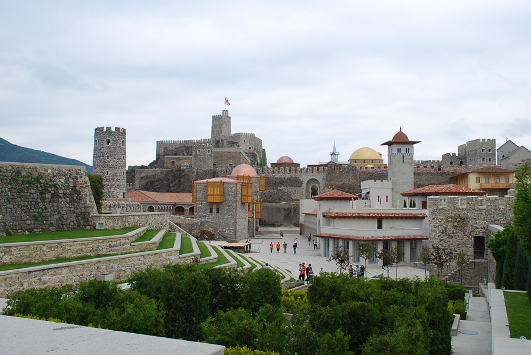

The 1944 Deportation of the Meskhetian Turks to Central Asia: Life in Uzbekistan and the Blocked Road Home
In November 1944 Stalin's regime deported the Meskhetian Turks, Kurds, and Hemshils from the Meskheti region of Georgia on the Turkish border to Central Asia. Roughly 90,000-115,000 people were removed, and tens of thousands died in transit and in the first years. Here is the documented history of their homeland, the deportation order, life under the special-settlement regime in Uzbekistan, and the return to Georgia that stayed closed.

The Meskhetian Turks (who often call themselves "Ahiska Turks") are a Muslim Turkic people who historically lived in the Meskheti (Samtskhe-Javakheti) region of southern Georgia, on the border with Turkey. Their origin is debated by scholars: one view holds they are a Turkified group of Georgians who converted to Islam under Ottoman rule, while another stresses that their language and culture are close to those of the Eastern Anatolian Turks (Kars, Ardahan). Most are Sunni Muslims and speak an Eastern Anatolian dialect of Turkish (Source: Wikipedia, "Meskhetian Turks"; Cultural Survival).
Homeland: the Meskheti region
Meskheti is a mountainous region in southwestern Georgia, encompassing the valleys around Akhaltsikhe (famous for Rabati Castle), Adigeni, Aspindza, and Akhalkalaki. The area passed to the Russian Empire in 1829 and was for centuries a multi-layered borderland shared by Georgians, Armenians, Turks, and Kurds. Until 1944 the Meskhetian Turks farmed and raised livestock in more than 200 villages there (Source: Wikipedia, "Meskheti"; Minority Rights Group).
November 1944: the deportation order
The legal basis for the deportation was State Defense Committee decree No. 6277ss of 31 July 1944, which authorized removing Turks, Kurds, and Hemshils "from the border strip." The operation was led by NKVD chief Lavrentiy Beria on the orders of Joseph Stalin. The main deportation began on the night of 14-15 November 1944 and was completed by 26 November. The official justification was "border security," but in practice it was part of Stalin's policy of collective punishment and ethnic "cleansing" - the same years in which the Crimean Tatars, Chechens, Ingush, Karachay, Balkars, and Volga Germans were also deported (Source: Wikipedia, "Deportation of the Meskhetian Turks"; deportation.org.ua).

The operation and the deadly journey
About 4,000 NKVD personnel took part, with 34 million rubles allocated. People were given only a few hours to gather: "You are to be deported. Get ready. Take foodstuffs for three days." They were packed into cattle wagons - roughly 7 families per boxcar, 20-25 families per carriage - and transported, sealed in, for nearly a month to Central Asia. Cold, hunger, and epidemic disease exacted a huge toll in transit and in the first years: the most conservative estimate is 12,589 deaths (about 13 percent), while several sources cite 30,000 to 50,000. Because the sources differ, these figures are best treated as a range (Source: Wikipedia, "Deportation of the Meskhetian Turks"; Anadolu Agency).
Settlement in Uzbekistan and the Fergana Valley
In all, roughly 90,000-115,000 people were deported - between 92,307 and 94,955 Meskhetian Turks from 212 villages, plus some 8,700 Kurds and about 1,400 Hemshils. They were distributed across three republics: the largest share, 52,163, to the Uzbek SSR, 25,598 to the Kazakh SSR, and 10,546 to the Kyrgyz SSR, with resettlement completed by 31 January 1945. In Uzbekistan most were placed in the Fergana Valley (the Fergana, Andijan, and Namangan provinces), as well as around Tashkent and Samarkand, and drafted into cotton and agricultural labor (Source: Wikipedia, "Deportation of the Meskhetian Turks"; Minority Rights Group).
The special-settlement regime (spetsposelenie)
The deportees were placed under the "special settlement" (spetsposelenie) regime, which came with harsh restrictions: forced labor (often 11-12 hours a day), meager food rations, a ban on leaving the assigned area, and a duty to report regularly to the NKVD/MVD. Leaving the designated place without permission could bring criminal charges. The regime was eased after Stalin's death: a decree of 28 April 1956 released them from administrative control, but unlike other deported peoples the Meskhetian Turks were not allowed to return to their homeland and were never fully rehabilitated (Source: Wikipedia, "Deportation of the Meskhetian Turks"; Cultural Survival).
Community in exile: language, faith, and identity
For decades the Meskhetian Turks lived in Uzbekistan, Kazakhstan, and Kyrgyzstan, farming alongside the local population. They sought to preserve their family-centered way of life, Sunni Muslim traditions, and their Eastern Anatolian dialect of Turkish - though their speech also absorbed Uzbek, Kazakh, Kyrgyz, Russian, and Azerbaijani words, and in the Soviet period was often written in Cyrillic. For many, Central Asia became a new home, yet "Ahiska" - the Meskheti homeland - remained a symbol in the collective memory (Source: Wikipedia, "Meskhetian Turks"; Minority Rights Group).
The blocked road back to Georgia
Unlike the Crimean Tatars or the Volga Germans, the Meskhetian Turks were not officially rehabilitated in the Soviet era and had no organized route back to their homeland of Meskheti. Several attempts to return between 1961 and 1969 ended in re-deportation; by 1989 only a few dozen families remained in Georgia. Independent Georgia (after 1991) moved slowly on repatriation too: on joining the Council of Europe in 1999, Georgia committed to creating a legal basis for the return of the deported Meskhetian population, and adopted a relevant law in 2007 - but in practice only a small number of families have gained repatriate status in the years since (Source: Council of Europe/PACE - "The situation of the deported Meskhetian population"; FUEN).
The 1989 Fergana events and a second scattering
The 1944 tragedy was linked, 45 years later, to yet another displacement: in June 1989 violence against the Meskhetian Turks erupted in the Fergana Valley, killing dozens (that event is covered in detail in our separate article on the "Fergana events"). After those clashes roughly 70,000 Meskhetian Turks left Uzbekistan, and today the people are scattered across several states: Azerbaijan, Russia, Kazakhstan, Kyrgyzstan, Ukraine, Turkey, and in part still Uzbekistan and Georgia. Their total number, by various estimates, exceeds half a million - a people robbed of its homeland twice within a single century (Source: Wikipedia, "Meskhetian Turks"; Minority Rights Group).

Sources
- Wikipedia — Deportation of the Meskhetian Turks
- Wikipedia — Meskhetian Turks
- Minority Rights Group — Meskhetian Turks in Uzbekistan
- Council of Europe / PACE — The situation of the deported Meskhetian population
- Cultural Survival — Population Transfer: The Tragedy of the Meskhetian Turks
- Anadolu Agency — Turkiye marks anniversary of deportation of Meskhetian Turks